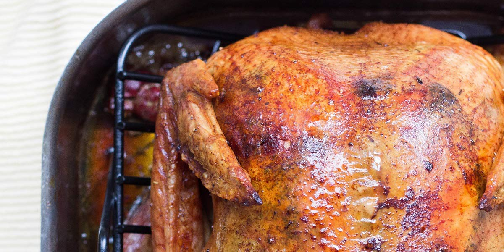

Roasted Chicken
Recipe Specification
Ingredients List
| Ingredients | Quantity |
|---|---|
| Free-range Chicken | 1x2kg |
| Fresh Thyme | 2 sprigs |
| Garlic Cloves | 3 Cloves |
| Fresh Rosemary | 2 sprigs |
| Vegetable Oil | 60ml |
| Lemon | 1x1 |
| White Onions | 2x1 |
| Salt & Pepper | To Season |
Yield: 4-6 portions
Preparation
- Slice Onions in half and place at the bottom of a deep baking tray. Place Chicken on top of onion slices.
- Slice Lemon in half and along with rosemary and one thyme sprig, place inside the chicken.
- Pick the leaves off the remaining thyme sprig.
- Peel and crush garlic cloves.
- Mix oil, garlic thyme, salt and pepper in a pestle and mortar before rubbing into chicken’s skin.
- Cover baking tray loosely with tin foil.
- Pre-heat oven to 200’C.
Cooking Instructions
- Place chicken on middle shelf in oven and cook for 30 minutes.
- After 30 minutes, remove foil and turn heat down to 180’C before cooking for a further 30 minutes. Peirce chicken to see if juices run clear, as an indication of whether its cooked or not.

Serving Suggestions
Roast Chicken is great as the main attraction to a Sunday dinner. It goes well with roast potatoes and cauliflower cheese.
Storing instructions
Cool to room temperature and place in an airtight container before placing in the refrigerator. Consume within 4 days of making it.
Reheating Instructions
Pre-heat oven to 160’C and warm for 10 minutes. Alternatively, place in the microwave and heat for 3-4 minutes.